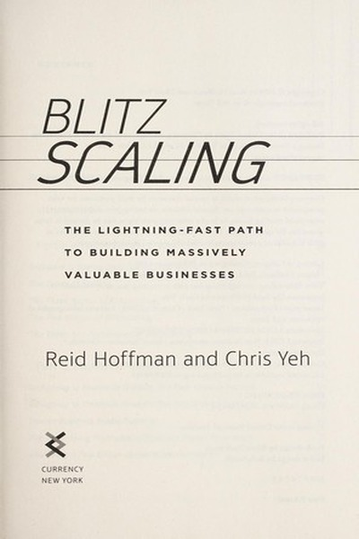

Library › Business & Startups
Blitzscaling — Summary & Key Lessons

The lightning-fast path to building massively valuable companies — and when it's the right (or wrong) move.
📖 OPEN THE FULL INTERACTIVE BREAKDOWN →🌐 Read it in Hindi, Hinglish, Gujarati, Tamil & 22 more languages — free, with audio.
💡 The Big Idea
Hoffman's concept: blitzscaling is a deliberate strategy of prioritizing speed over efficiency in uncertain markets — launching before you're ready, scaling before you're proven, and accepting 'expected chaos' as the price of dominance. It's how Google, Facebook, Airbnb and LinkedIn became giants. But it's a high-risk, high-reward play that's only right when the winner-take-all dynamics justify it.
🧠 The 6 Key Lessons
Lesson 1: Speed Over Efficiency in Uncertain Markets
Chapter 1: What Is Blitzscaling?
Normal scaling optimizes efficiency — do more with less. Blitzscaling deliberately sacrifices efficiency for speed because in winner-take-most markets, the first to critical mass often wins the whole game. When the market is uncertain but the prize is huge, the risk of moving slow exceeds the risk of moving messy. Speed becomes the strategy, not a personality trait.
📖 Example: Airbnb and Uber raised and spent aggressively before profitability because the network effects meant the first dominant player would be nearly impossible to displace. Their 'inefficient' early spending bought the position that later efficiency couldn't have… Read the full example →
⚡ Do this: Ask your venture: is this a winner-take-most market where speed decides? If yes, design for speed; if no, blitzscaling is a trap.
Lesson 2: Launch Before You're Ready — But Not Before You're Viable
Chapter 2: Launch
The famous line: if you're not embarrassed by v1, you launched too late. Blitzscalers ship minimal versions and iterate with live users, because real-world feedback beats perfect speculation. The caveat: 'before you're ready' means before polish, not before the core promise works — the product must solve the problem, just not beautifully.
📖 Example: Facebook launched to one university before most features existed; Airbnb's first site was famously rough. Both had a working core loop — profiles and connections, listings and bookings — and refined everything else in public. Users forgave the roughness… Read the full example →
⚡ Do this: Ship your current project's minimum viable version this month — complete core, unpolished edges — and collect real feedback.
Lesson 3: The Company Is the Product
Chapter 3: The Company Is the Product
For blitzscalers, the organization itself is the most important product: a company that can scale its hiring, culture, management and capital is the true engine. Founders who obsess only over the user product while neglecting the company machine cap their growth. Building a company that can double without breaking is the core engineering challenge of blitzscaling.
📖 Example: Google's early advantage was not just search but its ability to hire and organize elite engineers at scale; LinkedIn's 'tours of duty' framework let it grow headcount without losing alignment. The company structure was as designed as the software. Read the full example →
⚡ Do this: Design your 'company' even if it's just you: document how hiring, decisions and culture will scale before you need them to.
Lesson 4: Hire Fast, Fire Fast, and Expect Chaos
Chapter 4: The Iron Law of Blitzscaling
Blitzscaling breaks organizations — processes that worked at 10 people fail at 100, and again at 1,000. Hoffman's advice: hire ahead of the curve, fire people whose skills no longer fit even if they're good, and accept 'expected chaos' as the operating state. The chaos is not a bug of the strategy; it is the strategy.
📖 Example: As companies blitzscale, their first executives often can't manage 10x the scope — and the successful ones replace roles, not out of cruelty but out of the math of scale. The organizations that pretended the old ways still worked were the ones that stalled. Read the full example →
⚡ Do this: Review your team's capacity for 10x growth: which roles will need different people or skills, and what's your plan to upgrade them?
Lesson 5: Raise Capital Before You Need It
Chapter 5: The Race of Blitzscaling
Blitzscaling is a race with capital as fuel: you raise aggressively before the growth curve demands it, because fundraising mid-crisis is fundraising at the worst terms. The biggest blitzscalers raised war chests that looked absurd at the time — and needed every rupee when the race tightened. Cash is the blitzscaler's ammunition; running out of it ends the game regardless of product quality.
📖 Example: Netflix raised billions to fund original content years before it was profitable, betting that the streaming war would be won by whoever had the deepest library — the capital raised early became the moat later. Rivals who raised conservatively ran out of… Read the full example →
⚡ Do this: If you're racing, model your cash needs for the next 18 months and raise the gap now — while you're strong, not when you're desperate.
Lesson 6: Know When Blitzscaling Is Wrong
Chapter 6: The Risks
Hoffman is clear about the costs: blitzscaling fails when the market doesn't have winner-take-all dynamics, when the burn outruns the path to value, or when the culture of 'expected chaos' destroys the product's soul. Many of the highest-profile collapses — WeWork among them — were blitzscaling without the underlying economics to justify it. Speed is a tool, not a religion.
📖 Example: WeWork's massive growth was blitzscaling in style but lacked the network effects and defensible economics that made the strategy work elsewhere — the speed had no engine behind it. The difference between a blitzscale and a burn is whether the market actually… Read the full example →
⚡ Do this: Before accelerating, answer honestly: does being first here create durable advantage, or just earlier bankruptcy? Choose speed only when the answer is clear.
✅ 5-Step Action Plan
- Assess whether your market rewards being first with durable advantage
- Ship your minimum viable version this month
- Document how your team/culture/decisions will scale before you need it
- Identify which roles will need upgrading at 10x and plan it
- Model 18 months of cash needs and raise the gap early
⚠️ When This Doesn't Work
⚠️ When this doesn't work: Blitzscaling has burned thousands of startups that copied the speed without the economics — 'move fast' without winner-take-all dynamics is just a faster way to run out of money, and the expected chaos can destroy culture, products and people's wellbeing. This playbook is for a specific situation; most businesses should scale deliberately, not blitz.
💀 The Graveyard Proves It
🏢 Adam Neumann — WeWork: $47B of Vibes. Burn: $47B → $8B in six weeks. Read the full case study →
💬 Best Quotes from Blitzscaling
- “If you are not embarrassed by the first version of your product, you've launched too late.”
- “Blitzscaling is what happens when you prioritize speed over efficiency in the face of uncertainty.”
- “The best entrepreneurs know that the company is the product.”
Interactive version: mark lessons as read, listen in your language, share quote cards.